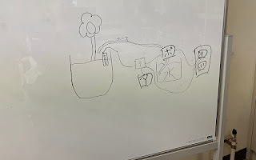
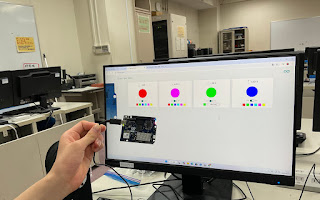
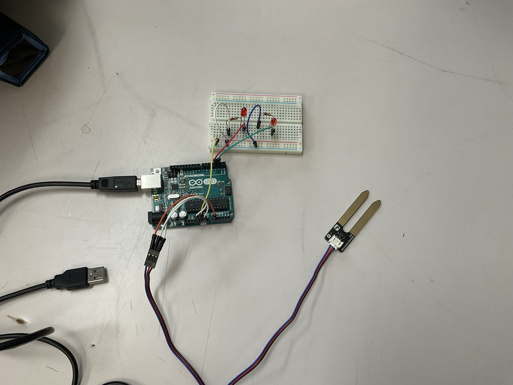

研究背景・目的
現代において、「植物を育ててみたいけれど、忙しくて毎日の水やりをする時間がない」「ついつい水をやり忘れて枯らしてしまう」という課題を抱える人が多く存在します。そこで、マイコンを使って自動で土壌の水分量を管理し、適切なタイミングで水やりを行う機械を開発すれば、植物を枯らすことなく手軽に栽培を楽しめるのではないかと考え、本研究に着手しました。
本研究における検証内容（目的）
- 設計したプログラムと回路により、想定通りに自動給水が動作するか。
- 土壌水分センサーを用いて、正確かつ安定した水分量を測定できるか。
- 人の手で水やりを行う場合と、機械で自動制御する場合とで、植物の成長速度や状態にどのような変化・違いが見られるか。
制作の過程
これまでの開発スケジュールと、各段階での主な進捗です。
使用する部品や、システムそのものの構想など
今日は、水やり機を完成させるために必要な部品を考えるために、実際に水をやる機構や使用する機器を考えました。
【議論】
水をやるタイミングを、土壌水分センサーで土壌の水分量を測って決めるということはすぐに決まったのですが、肝心な水をやる機構をどのような手段で実現するかで少し揉めました。
実際に出た意見としては、以下の2つです。
- ポンプは常に動かしたまま、水を排出するところにバルブをつけて開閉する方法
- ポンプそのものをマイコンでON/OFF制御する方法
この二つの意見が出てかなり揉めましたが、回路構成や制御がシンプルになるため、最終的にはポンプ自体をON/OFFする方式に決定しました。
【次回の予定】
実際にマイコンを用いてプログラムの方法などを学んでいく。

購入する物品を決め、実際にArduinoを用いた実験
今日は、前回決まらなかった購入する物品を決定し、その後に実際にArduinoを用いて稼働実験をしました。
【実験】
基礎的なプログラムを組み、実際に動くかどうかを確認しながらArduinoの使い方を学びました。
実際に行った実験：
- LEDを点ける
- LEDを点滅させる（Lチカ）
- LEDをスイッチで制御する
- ON／OFFを0と1で記録する
- ブザーを鳴らす
- ブザーで音階・曲を奏でる
今回の実験はプログラム担当の班員2名が実際にArduinoを動かして行いました。順調に処理が進み、かなりArduinoの扱いに慣れてくることができました。
【次回の予定】
Arduinoをさらに理解する。まだ触っていない班員も実際に触れて触感を掴む。

Arduino Uno Qを用いた実験
今日は、Arduino Uno Qを使って実験をしました。
【実験】
前回のArduino Unoよりも高性能なArduino Uno Qを使用して実験を行いました。
実際に行った実験：
- Arduino Uno Qのボード上に付いているLEDを点ける
- ボード上のLEDを点滅させる
- ボード上のLEDの色（RGB）を制御する
- 前回実験しなかったメンバーによるArduino Unoの基礎実験
まだ発注した部品が届かないため、センサーやポンプを用いた実験はできませんでしたが、基礎実験を深めました。Arduino Uno Qは標準のUnoと異なり、ボード上に強力なプロセッサが搭載されていてマイコン側で複雑な演算ができるのが強みですが、コードの記述法が少し異なり流用できなかったため苦戦しました。
今回の「土壌水分を測って水をあげる」というシンプルな目的においては、Uno Qは過剰スペックだと判断し、基本的には通常のArduino Unoを使って進める方針としました。
【次回の予定】
部品が届き次第、センサーやポンプの稼働実験を開始する。

土壌水分センサーを用いた制御プログラミング
発注していた部品がようやく手元に届いたため、一気に制作を進めていきます！
【実験】
ついに土壌水分センサーを用いた実習実験を行いました。
実際に行った実験：
- 土壌センサーで水分量を計測し、数値が閾値を超えたら一方のLEDを消灯し、もう一方のLEDを点灯させる制御
水分量が一定以上になると狙い通りLEDが切り替わり、自動制御の要となるプログラミングは大成功でした。今回はArduino Unoで実験を行いましたが、実験中に「データベースを使って、いつどれだけ水やりをしたかの履歴を記録・管理したい」という新たなアイデアが出ました。
ネット経由でデータベース管理を行うにはArduino Uno Qが必要となるため、一度見送っていたUno Qを再度活用する方針で進めていくことになりました。
【次回の予定】
追加物品が届き次第、ポンプの稼働実験を行う。

システムの概要
本システムは、土壌水分センサーによって常に土の乾燥具合を監視します。水分量が設定した基準値（閾値）を下回ったことをマイコンが検知すると、給水用ポンプに信号を送り、自動で水を供給する仕組みです。
ハードウェアの構成
本システムの構築にあたり、使用した主要部品の一覧です。
主要部品一覧
| 部品名 | 型番・仕様 | 役割 |
|---|---|---|
| Arduino Uno / Uno Q | Linux搭載・Wi-Fi機能（Uno Q） | 全体の制御・センサー値処理・DB連携・ポンプ制御 |
| 土壌湿度センサー (Soil Moisture Sensor) | SEN0114 | 2本のセンサー部を土に挿し、土壌水分量を測定 |
| チューブポンプ | PP310-030（定格3V） | 植物への自動給水用 |
| 栽培用容器 | プラスチック製（一般的な植木鉢） | ターゲットとなる植物を育てる土台 |
| 給水用タンク | ペットボトル（容量500ml） | 給水用の水を溜めておくタンク |
ソフトウェアの処理フロー
マイコン（Arduino）に書き込んだ制御プログラムの処理手順（アルゴリズム）について記述します。
※水分量の測定手順や、ポンプ駆動条件のフローチャートを掲載予定です。
成果と今後の課題
実験結果・検証成果
実際に自動水やり機を稼働させ、植物を栽培した実験結果をここに記述します。
今後の課題
- Web/データベースと連携した給水ログの可視化
- バッテリーの持ち（単三電池やモバイルバッテリーでの駆動時間）の改善・省電力化
- 水回りで使用するため、ケースの防水性や耐久性の向上
お問い合わせ
本研究に関するご質問やご感想などがありましたら、以下のフォームよりお気軽にご連絡ください。